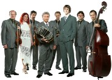

Commentaries on Argentine Tango and Life
by Stephen and Susan BrownBlogging: Truth or Truthiness?
26 November 2007 — Stephen Brown
Does the blogosphere or online discussion groups such as Tango-L generate truth, or what Stephen Colbert calls 'truthiness,' the latter being facts or concepts one only wishes or believes to be true?
An article recently published in Public Choice (subscription required) by Michael C. Munger examines the information content of political blogs. Munger finds that bloggers and the mainstream media face the same difficulties if they wish to rely on the blogosphere as a generator of truth. Both bloggers and media converge on a small number of key blogs operated by elite opinion makers as sources of information. But these elite opinion makers are highly aware of how political discourse is conducted and are likely to resist any information that doesn't conform to their existing attitudes and beliefs. In addition, blogs and blog readers are likely to separate themselves into smaller networks of people who hold substantially similar views. These factors tend to generate biased, polarizing views that are self-perpetuating, and people develop an us-versus-them mentality.
Munger's conclusion runs counter to a perhaps commonly held view that the blogosphere can serve as marketplace for information that approximates a parallel processing statistical estimator of the truth with nice properties as additional observers are added. The key to a good outcome is that there is some mechanism for sharing and aggregating the information and that observers are independent rather than polarized. In a polarized world where the additional observers replicate the information already provided by the elite opinion makers, the independence property necessary to avoid truthiness is destroyed.
For some related thoughts, see Why
Biased Views Are Self Perpetuating.
What Is a Master?
17 November 2007 — Stephen Brown
At Argentine
Tango Articles, Igor Polk writes:
"The more you watch the dance of a Master, the more you discover of
Elements, Methods, Structure, Feel, Shape, and even History. It is a whole
world in a Master's dance. It has depth, it is multidimensional, multilevel,
cross-connected in time, space, and sense, developing, contrasting, balanced,
and integral. And soulful. If you watch a dance of not masters - you have
feeling that you've seen it all. Oh, yet another one. Want-to-look-like-Masters
adorn like crazy, boleo wide. And this is it. That is not what counts.
"Unfortunately, often Masters do not care about being recognized as Masters.
"Happy are warriors: it is easy for them to find who is the best: one slash of a Master, and not-Masters lay down dead. It is not like that in dancing..
"It is difficult to recognize a Master. If you are not a Master yourself."
For some related thoughts, see Developing
Mastery.
Orquesta Color Tango in Dallas (2)
2 October 2007 — Stephen Brown
 In Dallas
for its fourth time, Orquesta
Color Tango played a great concert on Friday, September 28 and an unbelievably
wonderful milonga on Saturday, September 29. Most who attended the
milonga thought it was the best they had ever been to. The Dallas
Arts Center was a great venue with a spacious dance floor filled with hundreds
of people, a high ceiling, crystal chandeliers, fabulous decorations, and
windows that looked out at the City of Dallas and the lights of the State
Fair of Texas. The orchestra played wonderfully, and the sound system
was first rate. It was fantastic to see everyone—old friends,
new friends and strangers—dressed for the occasion and dancing to Orquesta
Color Tango's music.
In Dallas
for its fourth time, Orquesta
Color Tango played a great concert on Friday, September 28 and an unbelievably
wonderful milonga on Saturday, September 29. Most who attended the
milonga thought it was the best they had ever been to. The Dallas
Arts Center was a great venue with a spacious dance floor filled with hundreds
of people, a high ceiling, crystal chandeliers, fabulous decorations, and
windows that looked out at the City of Dallas and the lights of the State
Fair of Texas. The orchestra played wonderfully, and the sound system
was first rate. It was fantastic to see everyone—old friends,
new friends and strangers—dressed for the occasion and dancing to Orquesta
Color Tango's music.
For a reminder of Color Tango performing, see these YouTube
videos (filmed last year in Buenos Aires):
Nonino,
Emancipación,
Malena.
Also see Creative Tango's Color
Tango webpage.
Orquesta Color Tango in Dallas
20 September 2007 — Stephen Brown
Orquesta Color Tango, from Buenos Aires and the leading tango orchestra in the world, will return to Dallas for its fourth time September 28 and 29 to play live for a concert and a milonga. Both events are sponsored by Tango Argentino Dallas. Led by bandoneonist Roberto Alvarez, the eight musicians of the orchestra draw on tango's most distinguished traditions to create a contemporary sound. The orchestra brings a little bit of Buenos Aires to Dallas on each of its visits. This year, the orchestra will feature its outstanding singer Roberto Decarre during the Friday night concert.
The concert will be Friday, September 28, 8:30-10:00 p.m. at the Latino
Cultural Center, 2600 Live Oak St. @ Good Latimer Expy, Dallas, TX (Google
Map) (MapQuest).
The milonga is Saturday, September 29, 8:30 p.m. to 1:00 a.m. at The Dallas
Arts Center, 2030 Main Street, Dallas, TX (Google
Map) (MapQuest).
Admission to the concert is $20 (advance); $22 at the door. Admission
to the milonga is $50 (advance) including food and drink; $55 at the door.
A special advance purchase package with admission to the concert and milonga
is available for $57. For ticket purchases or information, see Tango
Argentino Dallas.
All Things
24 August 2007 — Susan Brown
"Be really whole and all things will come to you." Lao Tzu, Tao
Te Ching
Staying Alive
23 August 2007 — Susan Brown
"In spite of illness, in spite even of the archenemy sorrow, one can
remain alive long past the usual date of disintegration if one is unafraid
of change, insatiable in intellectual curiosity, interested in big things,
and happy in small ways." Edith Wharton, A Backward Glance
Education
22 August 2007 — Stephen Brown
Thanks to Chris John Jordan for providing the following quote:
"Education is not filling a bucket, but lighting a fire." William
Butler Yeats
Finding Our Own Tango
6 August 2007 — Stephen Brown
It seems to me that all of us must find our own tango in our own hearts, souls and bodies. (As I have written in these pages before, good instruction can help take the student to the door, but those who become tango dancers step through the door themselves.)
Upon finding our own tango, most of us will discover that some or much of what we were taught is useless, but that doesn't mean we didn't benefit from the instruction. The seeming misdirection and missteps are part of the learning process.
I also think that the insights we gain in finding our own tango aren't likely to be understood by those who haven't found their own tango. They may even be misunderstood by others who have found their own tango.
For some related thoughts, see The
Best Teachers, Teaching the
Inner Essences of Tango, Excellent
Teachers and On Style and Styles.
Tango Is Simple
1 August 2007 — Stephen Brown
On Tango-L,
Barbara Garvey wrote:
"Tango is simple, the more you know about it, the more obvious its
simplicity becomes. It is not easy, it is maybe even hard."
For some related thoughts, see Knowledge
and Wisdom and The Joys of Simple
Tango.
Who We Were Meant to Be
1 August 2007 — Stephen Brown
On Tango-L,
Nina Pesochinsky wrote:
"Tango is a mirror of all of the insecurities a person may have.
When a person, any person, begins to dance tango, Tango puts a mirror
in front of them and says 'Look! These are your insecurities.
What do you want to do about them?' If you do nothing, you will be
hurt and disappointed and you will not dance.
"So people do. Everyone. Often unconsciously because they want the transformation that tango offers them. This is my point that transcends cultures. Argentine people go through this process as well. It is a process of Tango.
"A much deeper level of transformation actually allows the true masculine and feminine power to emerge. Once a person begins to overcome their insecurities, it begins to show not only in tango, but in the rest of their life. In a way, struggling and loving tango helps people to become who they truly are and who they were meant to be.
"Tango is an amazing place when transformations occur. For Argentine people who had danced for decades, tango accompanied their life and transformations. Outside of Argentina, people come to tango differently, and so tango may be that much more powerful for them."
For some related thoughts, see The
Woman's Role in Tango (2).
The Woman's Role in Tango (2)
1 August 2007 — Stephen Brown
On Tango-L,
Nina Pesochinsky wrote:
"In the non-tango world, the issues of power between men and women
are perceived in a somewhat simplistic way because, however it looks, it
works for most people and they do not want to look any further. Tango
is more intuitive, more sensitive and more demanding ..., whether you want
it or not.
"The masculine and feminine power in tango do not compete with each other. They do not take away from each other. Instead, the feminine can only be powerful if the masculine is powerful and the masculine cannot be powerful if the feminine is not powerful.
"But both men and women have both the masculine and the feminine. That means that the power of the Universe is in both, not just in the women.
"So in tango, the woman is not powerful if the man is not, and the man's
power is trapped, if the woman he dances with is weak in her power.
That is why the follower's technique classes are very
useful. Women learn to connect with their bodies in the movement
of tango and bring forward their powerful feminine essence.
"And the tango embrace is between the masculine and the feminine. When the woman is in her feminine and the man is embracing her from his feminine energy, it usually does not feel good for the woman. When a woman embraces the man from her masculine power, it usually does not feel good for the man. If people do not take care of the embrace, they are missing an opportunity to seduce his/her partner into a tango that they may remember for the rest of their lives."
For some related thoughts, see The
Woman's Role in Tango and the Yin
and Yang of Tango.
On Perfection and Heaven
31 July 2007 — Stephen Brown
Tango is a dance in which is it easy to become obsessed with perfection. The taste of heaven that is found within tango may encourage some to seek perfection. Others may bring their own perfectionism to tango. But we should never confuse heaven and perfection. They are very different. The path of perfectionism often leads away from heaven—as we find ourselves accompanied and driven forward by demons (aka a monkey mind) that become all too familiar. If we pursue perfection in our practice, we are likely developing the demons that seek to keep us from effective dancing.
In tango, heaven is found through the simple gift of grace. That comes from getting out on the dance floor with the person that happens to be right for the moment, opening one's heart and falling in love again. The times that this happens, one is just happy to be in the arms of another at the end of the tanda.
For some related thoughts, see Practicing
for Effective Dancing and In Search of
the Perfect Tango.
Practicing for Effective Dancing
31 July 2007 — Stephen Brown
For most people, the goal of practice is to become more effective at dancing tango socially. What are the elements of effective social dancing? Such dancing cannot be reduced down to a set of mechancial skills. The embrace, the relationship with one's partner, the relationship with others on the dance floor, and the relationship with music are the context within which we dance tango. Practicing by oneself may help develop some mechanical skills, such as balance, familiarity with the music, knowledge of step patterns, etc., but they also remove the entire context of tango.
Practicing with a partner improves matters considerably because it is
closer to dancing. Practicing in a room full of others improves matters
even more because it is even closer to dancing. Some might go even
further and claim that practicing at a milonga would be even better, but
it is reasonable to recognize that social norms separate what constitutes
practice and social dance.
The Woman's Role in Tango
26 July 2007 — Stephen Brown
On Tango-L,
Rose of Portland wrote:
"Sometimes I have found that men get on these power trips about leading
and neglect to acknowledge the true fact that the follower has an equal
amount of influence on the dance and that it is truly a partnership.
Even the most machismo men can not deny the powerful role of the follower.
"Here are a couple of things to consider about the role of the follower and her power to influence the dance:
"1. It is the woman's choice who she dances with. She allows herself to be approached or not, she selects whether or not to catch a man's gaze. I would go so far as to say that most of the time it is really the woman doing the asking with her posture and eye contact and not really the other way around.
"2. The follower is in control of the dance. Without someone who has agreed to follow you, there can be no lead. There is nothing 'prey'-like about this and it is a completely conscious and active choice on the part of the follower. Without her trust and response your lead means nothing. Also, the way in which she interprets the lead is her choice, so as a leader you have to be aware of and open to the possibilities she presents.
"3. The follower has an extremely influential role in the expression of musicality. Her timing, responsiveness, and the manner in which she executes the movements which are lead are all completely her responsibility. Also, the spaces in between what you lead are hers to play with.
"The best dances happen when both the leader and follower are striving to make the dance delicious for the other person while confidently expressing their personal uniqueness in a warm and trusting embrace.
"Be kind to one another. Don't confuse femininity and masculinity with
weak and strong or predator and prey."
The Embrace and Tango
24 July 2007 — Stephen Brown
On Tango-L,
Nina Pesochinsky wrote:
"When beginner male AT students approach me with a question, 'Do you
think I can learn to dance this?', I don't tell them yes, if you can walk,
you can dance. Instead, I tell them that if they know how to hold
a woman in their arms, they might be able to learn this dance."
For some related thoughts, see Open
or Close Embrace?
Open or Close Embrace?
24 July 2007 — Stephen Brown
On Tango-L,
Nina Pesochinsky wrote:
"There is only one embrace. It becomes closer or more open depending
on the crowd, the music, the partner, the movement, etc. The embrace
accommodates the dance and the dancers.
"The separation of styles in terms of 'close' and 'open' embrace came from the foreigners that began trying to make sense of tango in the early 1980s. People noticed a clear difference between the social embrace and the stage embrace when the show Tango Argentino roared through the world in the 1980s. ...
"In a real sense, what is called 'open' social embrace now, began outside of Argentina and is a result of a misunderstanding that stage tango is not social tango. That distance between partners is much needed on stage, just like the dreaded back step. Without the space between partners, the dancers are invisible to the audience. On stage, everything has to be made bigger. Without the back step, dancers would eventually fall off the stage. So both of these elements, dreaded by many social dancers, are much needed on stage. But on a social dance floor, they are silly - they do not serve the purpose of an intimate exchange that social tango calls for. What goes on between partners in a dance is a secret. It is private and is contained by the embrace. What goes on on stage is entertainment and is meant for public to see.
"So, open=stage, close=social. Artistic license is allowed on stage only.
"There is another extreme called 'milonguero' style. The word was coined by Susana Miller in the early 90's to describe the classes that she was offering, which were meant to give people a quick ability to attend milongas. Since milongas are very crowded, many were satisfied learning just a few movements and not much technique and still be able to do something on a crowded dance floor. I know this from a person who was there when the term was first used. Milongueros never used that term. Each one had developed his own style and was very proud of it. And each one was very different from the others."
I might add that sometimes beginners dance in an open embrace out of
a lack of skill or knowledge.
Tango Festivals and Approaches to
Learning
23 July 2007 — Stephen Brown
On Tango-L,
Christopher Everett wrote:
"I see a significant movement among some of the people organizing the
larger festivals in the US (like the ones in Atlanta and Denver) to bring
on teachers who don't teach steps per se. Rather, they intend to
equip students with the tools needed to do anything their bodies might
need to do in the dance, up to and including a good appreciation of the
music, along with the the ability to respond to it in a way that's both
emotional and disciplined.
"And before we get all uppity at the step merchants, it's also clear to me that once you have embedded the basics of tango movement in your muscle memory, they are extremely valuable for showing you all kinds of cool things that you never thought of. There's always a place in the world for a some of those."
For some related thoughts, see Approaches
to Teaching and Learning Tango.
Learning the Structure of Tango
23 July 2007 — Stephen Brown
Many dancers learn to dance tango without studying a theory of its structure, but such an observation may be beside the point. Many of the dancers from the older generation in Buenos Aires have an intuitive or subconscious understanding rather than a rational one. The idea is that studying the structure of tango is a quicker means of learning the knowledge that the dancers of an older generation took 5+ years to master intuitively.
I'm not proposing studying structure in a book as formal knowledge as an end in itself. One has to develop the intuitive or subconcious feel for the movements, and the only way to do so is by dancing. The idea is to use the conscious mind to help train the intuitive mind for dancing.
For some related thoughts, see Incomplete
Education.
The Structure of Tango
20 July 2007 — Stephen Brown
In numerous places throughout this website, I have written about the importance of understanding the the structure of tango without ever really defining what I mean by such a concept.
If we think of tango as being made up of individual steps and sequences of steps (step patterns), the structure of tango is the fabric from which these movements are created. Structure is not these steps or step patterns. Rather, it is discerned through an examination of step possibilities.
A number of tango dancers/instructors have examined tango's steps and step patterns and have created theories that can be used to describe the structure. Two such approaches to the examination of tango's structure have been in use for a number of years.
One approach emerged from a group of dancers led by Petroleo (Carlos Estevez) and Salvador Sciana during the golden age of tango. The group explored and developed turns. Mingo Pugliese was one of the youngest members of the group, and he is credited for distilling the group's thinking into a systematic approach to teaching turns (giros) The system generalizes turns into eight-count right and left turns. The system creates a frame of reference for the creation of all turning steps including giros, molinetes, enrosques and ganchos.
Another approach emerged from a group of dancers that was led by Gustavo Naveira and included such dancers/teachers as Fabian Salas, Chicho Frumboli, and (possibly) Pablo Veron. With contributions from his then partner, Olga Besio, and some of his compatriots, Naveira developed a systematic way for looking at nearly all the possible steps in tango. Some of the concepts include parallel and crossed systems of walking, the weight shifts necessary to switch between the parallel and cross systems, the equivalence between cross walking and back ochos, and a generalized approach to turns with a pivot and a circumference that incorporates giros, sacadas, ochos, boleos, and other elements. Naveira's system can serve as a frame of reference for creating nearly all tango steps. In addition, the system helped bring into visibility some step patterns, such as overturn ochos and changes of direction in turns, that were not previously used with much frequency.
Developing an understanding and mastery of the underlying structure
of tango through a system can greatly increase a tango dancer's improvisational
skills.
Approaches to Learning and Authenticity
19 July 2007 — Stephen Brown
I find it helpful to think of tango as having four layers of learning (from the top to the foundation).
4) Step Patterns and Choreographies
3) Structure of Tango
2) Quality of Movement
1) Rhythm and the Music - the foundation
For each layer there are levels of mastery—beginning, intermediate, advanced, etc. Rather than identifying their classes by layer, instructors typically classify their instruction by the levels of mastery within the layer they teach, which for most instructors is step patterns.
Without sufficient mastery of the skills in the underlying layers, learning at higher layers is relatively meaningless. In particular, learning many step patterns or mini choreographies without a knowledge of the underlying layers is like building a castle in the sky. Students without knowledge of the underlying layers who study with the all-too abundant StepMeisters are simply buying more bricks for their imaginary castles. The all too many of the people who take workshops year after year without ever really learning to dance tango probably fall into this category.
The style of tango is really independent of these layers; but many milonguero-style teachers emphasize rhythm and small elements of the dance. Many salon-style teachers emphasize step patterns and the quality of movement. Many of the nuevo-style teachers emphasize mastery of a structural knowledge, and nearly all the technique instructors emphasize the quality of movement. A heavy reliance on instruction in any one element is likely to result in only a partial knowledge of tango, and in students who are only capable of dancing in an imitation of the same style as their instructors. If the instructor is but an imitation of another, that makes the student an imitation of an imitation. That may be why so many of the Argentines who teach tango claim only dead masters as being their instructors.
So I have understanding why some claim that nearly all tango instruction is worthless, and that others claim that only Argentines can be masters of tango.
For some related thoughts, see Authenticity,
StepMeisters
Abound, The Music Is Essential,
Incomplete
Education, Dancing to the Music
(4), Dancing to the Music (3),
Dancing
to the Music (2), and
Dancing
to the Music.
Authenticity
19 July 2007 — Stephen Brown
"As far as tango goes, it really works well to become more Argentine
than the Argentines are." Nina Pesochinsky
StepMeisters Abound
16 July 2007 — Stephen Brown
In an interview published in the May 2007 issue of Tango
Noticias, Pedro "Tete" Rusconi offered the following comments about
tango dancing in the United States:
"[T]he problem ... is that organizers get anybody they can to come
and teach. But because this is a business, it's work for these dancers,
they don't come to teach you tango, they come to teach you steps. ... And
if you really think about it, the music is tango; it's not the steps.
Whatever style of dance you dance the music always comes first. So
what happens, if a teacher comes here and they sell you steps instead of
teaching how to dance, what happens? You don’t dance. You learn
steps because that is what you think you need to learn."
How extensively Tete's comments apply to the quality of tango dancing in entire United States is unclear to me. The interview was conducted after Tete visited Chicago to participate in the Chicago Mini Tango Festival, and he has not yet toured in many areas of the United States. It is clear what he thinks about teaching tango as steps.
For some related thoughts, see The
Music Is Essential.
Invierno Porteño
5 June 2007 — Stephen Brown
From Buenos Aires, Brooke
Burdett writes:
"Greetings from the Southern Hemisphere, heading toward the winter
solstice and the lowest tourist season in Buenos Aires. I'm writing
a note regarding the pros and cons of travelling to Buenos Aires during
the South American winter for those who may be considering a trip.
Pros:
"Classes, practices and milongas are less crowded, allowing room for
comfortable dancing. What a pleasure!
"Because classes are less crowded, you are likely to get more individual attention.
"Fewer foreigners in the milongas means a higher chance you will dance with Argentines.
"The cabeceo (asking to dance with eye contact and a head gesture) works with more ease because you have room to see people at their tables.
"You don't have to worry about getting drenched with sweat (yours or someone else's!) while dancing.
"With fewer foreigners around, you will have more opportunities to speak Spanish.
Cons:
"If you don’t like cold weather, it’s not the time to come. It
rarely gets below freezing here, but the cold is a humid one, and you feel
it.
"If you prefer being part of a denser international scene in the milongas, March or April is best.
"Some people’s favorite teachers/performers are abroad, teaching in summer festivals in the United States and Europe.
Advice:
"Bring clothes for layering. On the street you will feel cold.
Your first 30 minutes at the milonga you may feel cold. Once you
start dancing you will warm up quickly. I suggest that women bring
something to keep over their shoulders while sitting at the milongas.
However, never keep your coat on inside the milonga, because it will project
an air of unavailability.
"Insides of apartments can get quite cold because insulation and heating systems are different. So bring warm clothes for inside the house."
*Brooke Burdett is an American and an Argentine tango dancer and instructor
who has lived in Buenos Aires for the past ten years. In addition
to teaching workshops in North America, Brooke offers private tango lessons
in Buenos Aires and guidance to the complex tango scene. You can
read more about Brooke and her activities on her webpage.
Tamango on YouTube
26 February 2007 — Stephen Brown
From Buenos Aires, Carolina Rodriguez, the singer from the tango orchestra Tamango, writes that the orchestra has five new music videos on YouTube. The performances were captured in December 2006 by channel 11 of the province of Formosa and have good image and sound quality. You may find the five videos as follows:
Romance
de Barrio (with dancers)
La
Ultima Curda
Vuelvo
al Sur
Violentango
(instrumental)
Desencuentro
Otoño Porteño
12 February 2007 — Stephen Brown
From Buenos Aires, Brooke
Burdett writes:
"I know that from the northern hemisphere, this sounds odd, but ...
is summer almost over — so soon? ... Although the leaves still look pretty
green to me, autumn is around the corner here in Buenos Aires. The
city is starting to wake up piece by piece. People are filtering
back from the beach, kids are gearing up for a new school year, and everyone
hopes that the most recent heat wave will be the last one.
"For tango dancers in Buenos Aires, the changing of the seasons is always something very special. The summer/autumn turnover in particular features two very important tango festivals, both filled with talent and mastery. In a couple of weeks (February 23 to March 4), we will have the Festival Buenos Aires Tango put on by the city government. This is a great, non-touristy festival that makes tango very accessible to the locals. All over the city you can find classes and performances open to the public, culminating in the not to be missed outdoor milonga that takes place on a major avenue downtown (streets are closed off). [For more information, see the Buenos Aires Tango Festival website.]
"Then from March 11-18 we have the Congreso Internacional de Tango Argentino (CITA) put on by Fabian Salas and Cosmotango. This Festival brings together many great and well known tango dancers and performers. The show(s) that CITA puts on are a must-see; they are all dancing and loaded with some of today's best performers. [For more information, see the Cosmo Tango website.]
"Besides the festivals, it's a wonderful time of year to be dancing tango in Buenos Aires. Dressing lightly is more comfortable. As a woman, I love to leave the panty hose behind and dance with bare legs and sandals at the milongas. Also, there are a few great venues to dance tango outside. If you are here while it's warm, I suggest you go on a Saturday night to the milonga 'La Calesita' at the Club IMOS, Comodoro Rivadavia 1350. Another great place to go in the early evening on Sundays is La Glorieta, 11 de Septiembre y Echeverria."
*Brooke Burdett is an American and an Argentine tango dancer and instructor
who has lived in Buenos Aires for the past ten years. In addition
to teaching workshops in North America, Brooke offers private tango lessons
in Buenos Aires and guidance to the complex tango scene. You can
read more about Brooke and her activities on her webpage.
Where to Buy Tango Shoes in Buenos Aires
12 February 2007 — Stephen Brown
For those visiting Buenos Aires, buying new tango shoes is often a must.
A frequently updated list of the stores in Buenos Aires that specialize in tango
shoes is available at Where to Buy Shoes in
Buenos Aires.
Illegal File Sharing Doesn't Affect
Sales of CDs
12 February 2007 — Stephen Brown
For years, the music industry has argued that illegal downloads have
reduced legal music sales, and some companies have justified the use of
controversial copy-protection software on their CDs on that basis. Writing
for the February 2007 issue of the Journal
of Political Economy (subscription required), Felix Oberholzer-Gee
and Koleman Strumpf provide empirical evidence that illegal downloads have
no statistically discernable affect on CD sales. What makes their
research particularly interesting is that they are the first to study the
phenomenon employing data on actual downloads of music files. I'm
sure this won't be the last word on the subject.
The Greatest Ideas
25 January 2007 — Stephen Brown
"The greatest ideas you will ever have are the ones that other people
don't understand." Craig McCaw
Headlines and the Human Body
24 January 2007 — Stephen Brown
"You do not realize how the headlines that make daily history affect
the muscles of the human body." Martha Graham
Welcome
2014 Archive
Early Buenos Aires Tango, 6 July 2014
Peach Blossoms, 4 May 2014
Life Hasn't Been the Same, 12 April 2013
2013 Archive
Going, 13 August 2013
Polish Pre-War Tango, 8 May 2013
2012 Archive
Escaping, 24 December 2012
Imagination, 1 December 2012
Narcotango Recording
New Studio Album, 30 September 2012
Videos de Milongas,
Buenos Aires, 2 February 2012
Andrea Missé,
2 January 2012
2011 Archive
Technique,
16 December 2011
Without the Music,
8 December 2011
Let's Step on the Ground,
7 December 2011
Awaken,
6 November 2011
Proof,
7 October 2011
Gloria y Eduardo:
50 Años con el Tango, 3 July 2011
Mastering Technique,
15 June 2011
Tradition,
30 May 2011
Buying Tango Shoes in Buenos Aires,
30 May 2011
Tango de Salon or Tango Milonguero?,
29 May 2011
Myths About Dancing Tango,
1 May 2011
The Continuing Conflict Over Tango Styles,
17 April 2011
Nuevo Milonguero,
13 April 2011
The Dancer's Expression,
9 March 2011
Happy New Year,
1 January 2011
2010 Archive
Carlos Gavito: I Wanted to Dance,
28 August 2010
El Ultimo Bandoneón,
7 August 2010
Viva Las Vegas,
26 July 2010
Principles, Not Rules,
25 April 2010
TangoZapa,
1 January 2010
2009 Archive
Pursuing Happiness,
28 December 2009
Improvising,
28 December 2009
The Commonplace and the Remarkable,
28 December 2009
Keeping It in Neutral,
20 April 2009
2008 Archive
How We Are Together,
7 November 2008
Egotism or Cluelessness?,
26 October 2008
Wanting What You Want,
26 October 2008
Unskilled and Unaware,
4 October 2008
Who Holds the Key?,
7 September 2008
Remembering,
2 September 2008
Professionalism
and Creativity, 1 September 2008
Chasing the
Steps, 18 May 2008
Everyday
Goals, 8 May 2008
So Much More,
6 May 2008
Taking Control
of One's Own Development, 2 May 2008
Some Thoughts
about Leading, 30 April 2008
Gender Imbalance
in Tango, 24 April 2008
It Takes
Two Minds to Tango, 23 April 2008
Being Original,
22 April 2008
Exploring
Movement, 22 April 2008
Kinesthetic
Sense, 21 April 2008
Troileana,
14 April 2008
Close-Embrace-Style
Tango at a Crossroads?, 12 April 2008
On Style
and Nuevo Tango, 4 April 2008
Seduced by
Tango, 25 March 2008
Argentine
Nights, 18 March 2008
Improvising,
7 March 2008
To Dance
Tango, 21 February 2008
Why He Did
It, 06 February 2008
2007 Archive
Blogging:
Truth or Truthiness?, 26 November 2007
What Is a
Master?, 17 November 2007
Orquesta
Color Tango in Dallas (2), 2 October 2007
Orquesta
Color Tango in Dallas, 20 September 2007
All Things,
24 August 2007
Staying Alive,
23 August 2007
Education,
22 August 2007
Finding Our
Own Tango, 6 August 2007
Tango Is
Simple, 1 August 2007
Who We Were
Meant To Be, 1 August 2007
The Woman's
Role in Tango (2), 1 August 2007
On Perfection
and Heaven, 31 July 2007
Practicing
for Effective Dancing, 31 July 2007
The Woman's
Role in Tango, 26 July 2007
The Embrace
and Tango, 24 July 2007
Open or Close
Embrace?, 24 July 2007
Tango Festivals
and Approaches to Learning, 23 July 2007
Learning
the Structure of Tango, 23 July 2007
The Structure
of Tango, 20 July 2007
Approaches
to Learning and Authenticity, 19 July 2007
Authenticity,
19 July 2007
StepMeisters
Abound, 16 July 2007
Invierno
Porteño, 5 June 2007
Tamango on
YouTube, 26 February 2007
Otoño
Porteño, 12 February 2007
Where to
Buy Tango Shoes in Buenos Aires, 12, February 2007
Illegal File
Sharing Doesn't Affect CD Sales, 12, February 2007
The Greatest
Ideas, 25 January 2007
Headlines
and the Human Body, 24 January 2007
2006 Archive
On Differing
Styles and Overtraining, 17 November 2006
Changes in
the Tango Scene, 9 November 2006
Bridge to
the Tango Videos To Be Discontinued, 6 November 2006
What the
Bleep is Tango?, 9 October 2006
An Interview
with Roberto Alvarez of Color Tango, 8 September 2006
Dancing,
31 August 2006
Argentine
Tango: The Way You Dance It, 16 June 2006
Finding Self-Expression
and Freedom in Argentine Tango, 16 June 2006
North American
Tango Festival Update, 14 June 2006
Evolution,
8 June 2006
Becoming
an Expert, 6 March 2006
Destiny,
14 February, 2006
Knowledge
and Wisdom, 1 February 2006
Tango Workers
or Dancers?, 10 January 2006
North American
Tango Festival Update, 1 January 2006
2005 Archive
Are Disagreeable
People Entertaining?, 30 December 2005
Will Your
Dreams Come True in Buenos Aires?, 21 December 2005
North American
Tango Festival Update, 1 December 2005
Dancing Tango
Boosts Brain Function, 21 November 2005
Familiarity
Breeds Comfort, 21 November 2005
The Music
Is Essential 21 November 2005
Dancing to
the Classics, 21 November 2005
Is Argentine
Tango Changing?, 21 November 2005
The Joys
of Simple Tango, 9 November 2005
Finding the
Best Style of Tango, 2 November 2005
North American
Tango Festival Update, 1 September 2005
Developing
Skills for Social Dancing, 12 August 2005
On Style
and Styles (4), 12 August 2005
The Dance,
10 August 2005
On Style
and Styles (3), 10 August 2005
On Style
and Styles (2), 9 August 2005
On Style
and Styles, 8 August 2005
Seduction
or Imposition? (3), 27 July 2005
Seduction
or Imposition? (2), 27 July 2005
Seduction
or Imposition?, 26 July 2005
Hidden Tango
Conversations, 25 July 2005
Finding Connection
(4), 25 July 2005
Finding Connection
(3), 22 July 2005
Finding Connection
(2), 22 July 2005
Finding Connection,
21 July 2005
Incomplete
Education, 19 June 2005
The Invitation
to Dance in Buenos Aires, 11 May 2005
Resolving
Problems, 11 May 2005
Tango to
Evora (Alternative Tango), 19 April 2005
Why We Dance
Tango, 16 March 2005
Hit and Run
Milonga Through Christo's Gates, 28 February 2005
Tango: The
Spirit of Argentina, 25 February 2005
Cultural
Values and Styles of Argentine Tango, 20 February 2005
Tango Is
(Fill in the Blank), 10 February 2005
Asfalto,
4 February 2005
Roles and
Relationships in Argentine Tango, 1 February 2005
North American
Tango Festival Season Underway, 31 January 2005
Milongas
in Buenos Aires Reopening, 28 January 2005
Being A Follower
on Axis in All Styles, 18 January 2005
Dancing to
the Music (4), 1 January 2005
2004 Archive
Dancing to
the Music (3), 30 December 2004
Dancing to
the Music (2), 20 December 2004
Dancing to
the Music, 17 November 2004
El Arranque
on Tango Fusion and Other Approaches, 10 November 2004
A Tango Festival
during Thanksgiving in Austin, TX, 27 October 2004
Robert Duvall
in Dallas, 27 October 2004
How Am I
Not Myself?, 26 October 2004
Some Tango-Fusion
Music to Consider, 12 October 2004
Bravery,
17 September 2004
Becoming
a Good Tango Dancer (4), 9 September 2004
Becoming
a Good Tango Dancer (3), 8 September 2004
Beginners
Taught by Masters, 7 September 2004
Some CDs
for Learning About Tango Music, 23 August 2004
La Yumba,
20 August 2004
Argentine
Tango Survey, 17 August 2004
The Road
Not Taken, 12 August 2004
Becoming
a Good Tango Dancer (2), 9 August 2004
Becoming
a Good Tango Dancer, 6 August 2004
Excellent
Teachers, 16 July 2004
Art as an
Expression of Oneself, 16 July 2004
Tango Terminology,
15 July 2004
What's New?,
22 June 2004
To Embrace,
13 June 2004
Shall We
Dance?, 10 June 2004
Denver TangoFest
Recap, 9 June 2004
Techno Tango,
3 June 2004
Denver TangoFest
Photos, 3 June 2004
No Right
or Wrong in Tango, 3 June 2004
Stretching
Exercises for Tango Dancers (2), 2 June 2004
Intelligent
Dancing, 2 June 2004
Stretching
Exercises for Tango Dancers, 1 June 2004
Tango Takes
to the Air in Colorado, 1 June 2004
Leading and
Following, 28 May 2004
More on Dancing
at Tango Festivals (3), 28 May 2004
Tango Animation
Online, 26 May 2004
More on Dancing
at Tango Festivals (2), 25 May 2004
More on Dancing
at Tango Festivals, 25 May 2004
Inside the
Dream: Celebrating Women Who Dance Tango, 24 May 2004
Inside the
Dream, 24 May 2004
Dancing at
Tango Festivals, 23 May 2004
The Summer
Tango Festival Season Is Upon Us, 23 May 2004
The Best
Teachers, 23 May 2004
Cliquishness
at Milongas, 19 May 2004
Lao-Tzu on
Leadership, 19 May 2004
Teaching
the Inner Essences of Tango, 18 May 2004
What About
Leading?, 18 May 2004
The Gift
of Tango, 17 May 2004
Following
Doesn't Describe the Role, 17 May 2004
Why Biased
Views Are Self Perpetuating, 15 May 2004
Ultimate
Partnering, 14 May 2004
On Seeking
Heaven Rather than Perfection, 14 May 2004
American,
Argentine and International Tango, 14 May 2004
What Appeals
to Today's Tango Dancer, 13 May 2004
Dancing with
Grace, 13 May 2004
Yin and Yang
of Tango, 13 May 2004
Developing
Ease, 13 May 2004
Dancing in
the Music, 13 May 2004
Dancing on
the Beat, 13 May 2004
Open Architecture
and Tango, 13 May 2004
On Language
and Tango, 13 May 2004
Developing
Mastery, 13 May 2004
Developing
Their Own Style, 13 May 2004
A Tender
Embrace, 13 May 2004
Open Embrace,
Soft Embrace, 12 May 2004
Intensifying
the Experience of Tango, 11 May 2004
Why Goldern
Age Music Still Dominates Milongas, 5 May 2004
The Meeting
of Two Personalities, 3 May 2004
Approaches
to Teaching and Learning Tango, 30 April 2004
Taking Tango
Styles to Extremes, 24 April 2004
Rhuummmp
and Ric Tic, 23 April 2004
Dancing Tango
in Tight Spaces, 13 April 2004
Partitioning
the Dance Floor to Accomodate Different Styles, 12 April 2004
The Sweet
Zone of Tango Rhapsody, 11 April 2004
Nostalgia
for the Bohemian Ideal, 6 April 2004
Tango Chooses
You, 5 April 2004